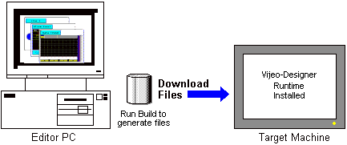

|
|
|
|
|
|
|
|
Before you can download a project, it must validate and build successfully. The download operation transfers all the necessary files to the target machine in order to run the user application.

We recommend you back up your projects after making changes. See Section 21.5, Backing Up Projects.
If you cannot download a project from Vijeo-Designer to the target machine, run the build operation again, and ensure you did not get errors during the validation or build.
New target machines (HMIGTU, HMIGTUX, HMIGTO, HMIGK, HMIPEP, HMIPSP, HMIPSO, HMIBMU and HMIBMP) are supported by new versions of Vijeo Designer only. Your applications and files will not download to new targets if your version of Vijeo Designer is too old. Ensure your version of Vijeo Designer editor (build time) is up-to-date.
There are various methods for downloading your project. Select the method best suited for your needs and your development environment. Ethernet, USB, and Serial download require connecting the development PC and target machine together. File System download (CF Card/SD Card, network folder, or removable media) is best suited when downloading to a remote target machine without a network available.
You can protect your target machines from unauthorized users. Secured target machines require users to enter in a user name and password before project download and installation can continue. For more information on download security, see Section 4.8.2.2, Protecting Targets from Unauthorized Project Downloads.
Ethernet downloads files to the target machine using the Ethernet port. After the user application is successfully downloaded over the network to the target machine, Vijeo-Designer Runtime loads and runs the user application.
File System (CF Card/SD Card or USB Drive) downloads the user application and runtime system files to the CF Card/SD Card reader or USB drive. At startup, the target machine copies the runtime system files into memory and runs the user application. This download method is available for all target machines, except for iPC and XBTGTW target machines.
File System (Network Folder) downloads the user application to a network folder. For iPC target machines, once the download is complete, use the Vijeo-Designer Application Installer on the supported target machine to install the user application into Vijeo-Designer Runtime.
Serial downloads files to the target machine connected to the serial port. After the user application is successfully downloaded to the target machine, Vijeo-Designer Runtime loads and then runs the user application.
USB downloads files to the target machine through a USB cable to the target's USB port. After the user application is successfully downloaded to the target machine, Vijeo-Designer Runtime loads and then runs the user application.

Run-time data such as recipes and security, stored on secondary or optional storage devices, is overwritten during download, unless you specify otherwise. You can preserve recipe and security data, as well as system settings, if in the Target properties you enable Preserve Runtime Data, and select to preserve recipe, security, or target settings in the Preserve Runtime Data dialog box. For more information, see Section 4.5.1.1, Target Properties: General.
Run-time generated data that is preserved at download include data logging, alarms (.csv), videos, and screen snapshots.
Data stored on SRAM and Secondary or Optional Drive, such as data logging, alarm backups, retentive variables, and event log, are deleted at download if you select the Delete All Run-time Data check box during download.
Runtime configuration settings are overwritten after project download, except for Network, Brightness, Contrast, Backlight and Multimedia settings.
HMIG5U, HMIG5U2, and HMIG5U22 operate on Windows Embedded Standard 7, which supports EWF (Enhanced Write Filter) and HORM (Hibernate Once Resume Many). EWF and HORM will automatically be disabled when a project is being downloaded to the target machine. After the download is complete, EWF will be enabled automatically, but the user will need to manually re-enable HORM in the EWF Configuration dialog box, accessible from the Windows system tray.
When EWF is enabled on the target machine, all data stored on the Main Drive is lost when the target machine is rebooted.
For the download methods available for each target machine, see Appendix 5, Hardware Specifications.
The following sections describe the procedure for the various download methods.
Download Method |
Reference |
Ethernet |
25.6.1 Ethernet Project Downloads |
Serial |
|
USB |
|
File
System |
25.6.4 Downloading
to a CF Card/SD Card Reader or USB Drive |